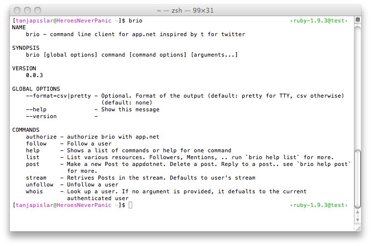
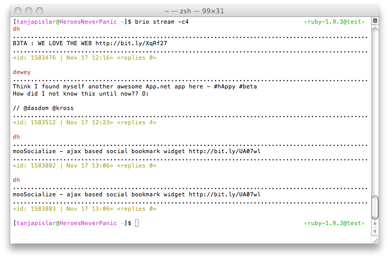
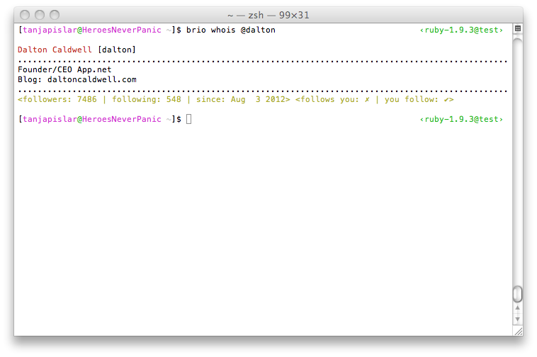

brio - CLI power tools for appdotnet
brio is a command line application for interfacing with appdotnet social network.
Instalation
You have to make sure that you have ruby installed. Preferably version 1.9.2 or 1.9.3.
Once you've verified that Ruby is installed:
gem install brio
Authorization
brio needs to be authorized with appdotnet to run. To proceed, type the following command at the prompt and follow the instructions:
brio authorize
This command will direct you to a URL where you can sign-in to appdotnet, authorize the application, and then enter the returned auth token back into the terminal.
Usage Examples
Typing brio help will list all the available commands. You can type brio help COMMAND to get help for a specific command.
brio help
Retriving your stream
brio stream
This will return your personalized stream brio stream -g This returns global stream
By default brio returns 20 posts. appdotnet allows up to max 200 counts. You can set a flag -c | --count if you want to customize the number:
brio stream -c16
You can also use them together: brio stream -gc50
Post Methods
Create a post
brio post "Hey! I'm posting from the command line!"
Reply to a post
brio post reply 12345 "hey, this is a reply!"
Note that we provided first the post id you are making a reply to, and then the message
Delete a post
brio post delete 1234
You can only delete a post that you created
Repost a post
brio post repost 1234
Delete a repost
brio post repost --rm 1234
Star a post
brio post star 1234
Delete a starred post
brio post star --rm 1234
Get user information
brio whois @username
Username can be omitted and it will default to the currently authenticated user - you.
Follow a user
brio follow @username
Stop following a user
brio unfollow @username
List Methods
All the list subcommands can take an optional count flag. When provided, it will return an arbitrary number of listing. By default, brio returns last 20 items.
Mentions
brio list mentions
This will list the posts that mention you.
brio list mentions @username
This will list the posts that mention username
brio list mentions -c10 @username
List last 10 menitons for username
Followers
brio list followers @username
This will list people that follow username You can also omit username and brio will list your followers.
brio list followers -c50
List my last 50 followers
Following
brio list following
List people I follow.
brio list following @username
List people that username is following.
Replies
brio list replies 1234
List replies of a post with id 1234.
brio list replies 1234 -c12
List last 12 replies for a post.
Posts
brio list posts @username
List posts created by username
brio list posts
List posts created by me (the current authenticated user).
brio list posts -c15
List my last 15 posts.
Screenshots



Copyright
See LICENSE for details.